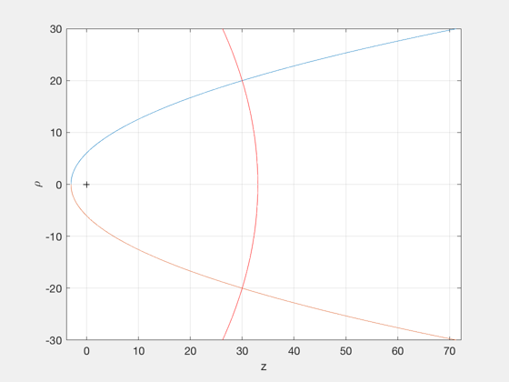

Fly near an invariant parabolic manifold and control to the displaced orbit.
This is a possible transfer for an Earth magnetotail science mission. The optimal orbit rate is used for the displaced orbit.
Since version 7. ------------------------------------------------------------------------ Reference: John Bookless and Colin McInnes, "Dynamics and Control of Displaced Periodic Orbits Using Solar-Sail Propulsion", JOURNAL OF GUIDANCE, CONTROL, AND DYNAMICS, Vol. 29, No. 3, May-June 2006 ------------------------------------------------------------------------ See also NonKeplerianPlanet and SailClosedLoopNLEqns., QCR, Constant, Plot2D, Plot3D, TimeLabl, PlottingTool, PlottingToolStruct, Accel, PlottingParabolas, Control ------------------------------------------------------------------------
Contents
- Desired Orbit Parameters
- Simulation duration (non-dimensional)
- Control mode: (0) none (1) sail area (2) sail pitch angle
- Dimensionless
- Compute orbit parameters
- Compute manifold insertion conditions
- Design Linear Controller
- Set up and perform integration
- Plot Results
- Compute cartesian coords from cylindrical
- Compute parabolic quantities
- Dimensionalize for the Earth
- Sail size
- Plot trajectory and coordinates
- Computing Control
%--------------------------------------------------------------------------- % Copyright (c) 2007 Princeton Satellite Systems, Inc. % All rights reserved. %--------------------------------------------------------------------------
Desired Orbit Parameters
%-------------------------
rho0 = 20;
z0 = 30;
PlottingParabolas( rho0, z0 );
 Simulation duration (non-dimensional)
%--------------------------------------
tEnd = 6e3;
Control mode: (0) none (1) sail area (2) sail pitch angle
%----------------------------------------------------------
mode = 1;
Dimensionless
%--------------
mu = 1;
Compute orbit parameters
%--------------------------- r0 = (rho0^2 + z0^2)^(1/2); thetadot0 = (rho0^2 + z0^2)^(-3/4); hz0 = rho0^2*thetadot0; % Assume optimal period kappa0 = z0/r0^3; % non-dimensional % Compute angular momentum of desired orbit H = 0.5*(rho0^2*thetadot0^2) - mu/r0 - kappa0*z0; xi0 = sqrt(z0+r0); eta0 = sqrt(r0-z0);
Compute manifold insertion conditions
%--------------------------------------
zin = 0;
rin = eta0^2;
rhoin = rin;
thetadotin = hz0/rhoin^2;
rhodotin = sqrt(H + mu/rin + kappa0*zin - 0.5*rhoin^2*thetadotin^2);
zdotin = rhodotin;
Design Linear Controller
%------------------------- A31 = -3*hz0^2/rho0^4 - 1/r0^3 +3*rho0^2/r0^5; A32 = 3*rho0*z0/r0^5; A41 = A32; A42 = -1/r0^3 + 3*z0^2/r0^5; A = [0 0 1 0;0 0 0 1; A31 A32 0 0;A41 A42 0 0]; switch mode case 1 % Sail area control B = [0;0;0;1]; Q = diag([1e-2 1e-2 1e-2 1e-2]); R = 1e6; case 2 % Pitch angle control B = [0;0;kappa0;0]; Q = diag([1e1 1e1 1e-1 1e-1]); R = 1e4; end N = [0;0;0;0]; [G,sinf] = QCR(A,B,Q,R,N);
Set up and perform integration
%------------------------------- tspan = [0 tEnd]; xin = [rhoin zin rhodotin zdotin 0 thetadotin]'; options = odeset('RelTol',1e-10,'AbsTol',1e-12); [t,x] = ode45(@SailClosedLoopNLEqns,tspan,xin,options,kappa0,rho0,z0,G,mode);
Plot Results
%-------------
n = length(t);
PxiP = zeros(1,n);
PetaP = zeros(1,n);
control = 0;
Compute cartesian coords from cylindrical
%------------------------------------------
xP = x(:,1)'.*sin(x(:,5)');
yP = x(:,1)'.*cos(x(:,5)');
zP = x(:,2)';
rP = sqrt(x(:,1)'.^2+x(:,2)'.^2);
xi = sqrt(rP+zP);
eta = sqrt(rP-zP);
Compute parabolic quantities
%------------------------------ for i = 1:n xidot = (1/(2*xi(i)))*(x(i,4) + (1/rP(i))*(x(i,4)+x(i,3))); etadot = (1/(2*eta(i)))*(-x(i,4) + (1/rP(i))*(x(i,4)+x(i,3))); PxiP(i) = xidot*(xi(i)^2+eta(i)^2); PetaP(i) = etadot*(xi(i)^2+eta(i)^2); end
Dimensionalize for the Earth
%----------------------------- muEarth = Constant('mu earth'); rE = 6378; wTilde = sqrt(muEarth/rE^3); kTilde = muEarth/rE^2; [tPlot,tLabl] = TimeLabl(t'*1/wTilde);
Sail size
%---------- [pitch,accel] = NonKeplerianPlanet( rho0*6378, z0*6378, [], Constant('mu earth') ); fprintf('Sail accel: %5.5f mm/s2\n',accel*1e6)
Sail accel: 6.27155 mm/s2
Plot trajectory and coordinates
%-------------------------------- Plot3D([zP;xP;yP],'z','x','y','Sail Trajectory',1) Plot2D(tPlot,[zP;x(:,1)';xP;yP],tLabl,{'z','\rho'},'Orbit Coordinates',[],... {[1],[2 3 4]}) Plot2D(tPlot,[PxiP;PetaP],tLabl,{'P_{\xi}','P_{\eta}'},'Conjugate Momentum Along Parabolic Axes') Plot2D(tPlot,[xi;eta],tLabl,{'\xi','\eta'},'Parabolic Coordinates')
Computing Control
%------------------ kappaP = kappa0*ones(1,n); alphaP = zeros(1,n); for i=1:n if abs(x(i,1)-rho0) <= .02 control = -(G(1)*(x(i,1)-rho0) + G(2)*(x(i,2)-z0) + G(3)*x(i,3) + G(4)*x(i,4)); kappaP(i) = kappa0 + control; alphaP(i) = control; end end switch mode case 1 Plot2D(tPlot,kappaP*kTilde*1e6,tLabl,'Sail Acceleration (mm/s2)') case 2 psiP = asin(sin(alphaP).*cos(x(:,5)')); phiP = atan(tan(alphaP).*sin(x(:,5)')); Plot2D(tPlot,[psiP;phiP]*180/pi,tLabl,{'Pitch','Yaw'},'Sail Control Angles (degrees)') end d = PlottingToolStruct( [xP;yP;zP], tPlot ); PlottingTool( 'load sim data', d ); %-------------------------------------- % PSS internal file version information %--------------------------------------